总方案总览
核心要求与统一设计原则，四条线全部按此标准执行。
| 要素 | 统一设计 |
|---|---|
| 出发返程 | 9/12（周六）下午航班出发，9/16（周三）17:00后航班返沪；D1 不排景点，抵达即入住+欢迎晚宴 |
| 每日节奏 | 每天 1-2 个景点，上午 10 点后出发、16:00 前结束游览，下午留出休整/自由时间，不赶路 |
| 酒店 | 全程 ≤2 家连住：平遥线、大同线均为 1 家连住 4 晚（零换酒店）；其余 2 家 |
| 餐饮标准 | 全程吃好住好：特色宴请 4 顿（欢迎晚宴/地方宴席）+ 每日高标准团餐，配地方风味 |
| 安全红线 | 全线不爬山、无悬崖栈道；长白山天池用景区环保车登顶；漂流/ATV 等体验项目均配专业教练与护具 |
| 信号保障 | 工作日（9/14-9/15）以成熟景区与市区为主，信号覆盖良好；偏远体验项目（漂流/挖参/ATV）排入周日（9/13） |
| 用车 | 全程头等舱座椅大巴（2+1 座椅布局），高速/主干道优先，颠簸路段提前告知 |
| 服务 | 全程固定全陪工作人员 1 名 + 当地地接导游 1 名，全程随队 |
| 团建 | 每晚轻量团建（歌舞宴/观演/篝火/手作/夜游），21:30 前收场，全员统一行动不分散 |
比四线对比总表（按综合推荐排序）
人均报价均含往返机票、酒店、门票、包车、餐食与全陪服务。危险因素按"安全第一"原则逐线评估标注，供决策参考。
| 推荐序 | 线路 · 行程亮点 | 酒店 | 人均报价 | 危险因素 | 主要权衡 |
|---|---|---|---|---|---|
| 🥇 ① 洛阳+郑州 龙门石窟+少林寺+幻城+豫博 |
四个世界级IP、全程平路+坐定观演、航班最密、信号全稳 | 2家 | ¥8,000-8,500 | 低全程无高危项目；仅幻城散场较晚（约21:30回酒店） | 跨两市，含2段城际衔接（全程高速） |
| 🥈 ② 平遥+壶口 古城+大院+壶口+晋祠 |
1家客栈连住4晚最省心、性价比最高、信号全稳 | 1家 | ¥7,800-8,300 | 低-中壶口临崖观景台（护栏完备、防滑板）；接近景区约30-40分钟盘山弯道 | 壶口段为全天车程日（往返约6.5h） |
| 🥉 ③ 东北线 延吉+长白山+图们 |
长白山天池全览+朝鲜族民俗换装+漂流/挖参/ATV体验+图们国门 | 2家 | ¥7,900-8,400 | 中-低天池海拔2691m+山顶大风；漂流/ATV需教练护具；盘山公路弯道；天池视天气开放 | 首日直达二道白河（机场-酒店零折返）；图们国门从延吉出发仅1h车程，全程车程最短 |
| ④ 大同 云冈+悬空寺+应县木塔 |
文化浓度最高、1家酒店零转场 | 1家 | ¥8,000-8,500 | 中悬空寺登临为悬崖栈道（单向限流，恐高者可远观）；每日仅2班直飞、返程准点率80% | 返程需核验班次（备太原高铁中转预案） |
预算说明：人均 1 万即可做出顶配体验（五星/准五星酒店 + 高标餐 + 最佳演出座位）；若按上限 1.5 万执行，可升级为国际五星连住、专属包场演出。
关于桂林线：阳朔-桂林段为山路（弯多坡缓），按"安全第一"原则已移除，未纳入本次方案；如后续仍希望考虑，可另出"纯桂林市区 + 漓江游船"零山路版本。
①洛阳+郑州线 · 龙门石窟 + 少林寺 + 只有河南·戏剧幻城
四个世界级IP、零爬山、全程平路+坐定观演，航班最稳、返程选择最多，综合推荐第 1。
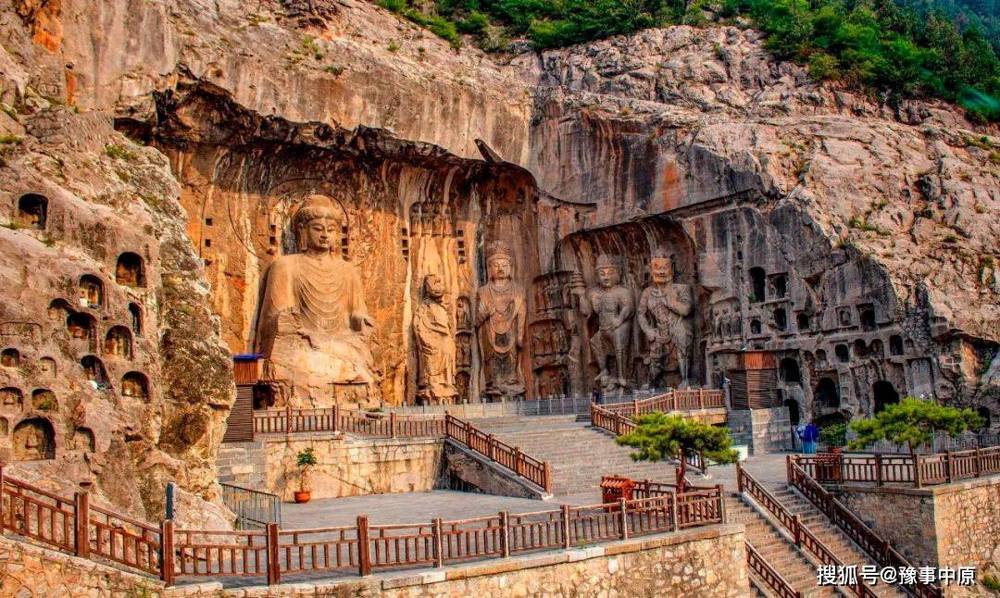
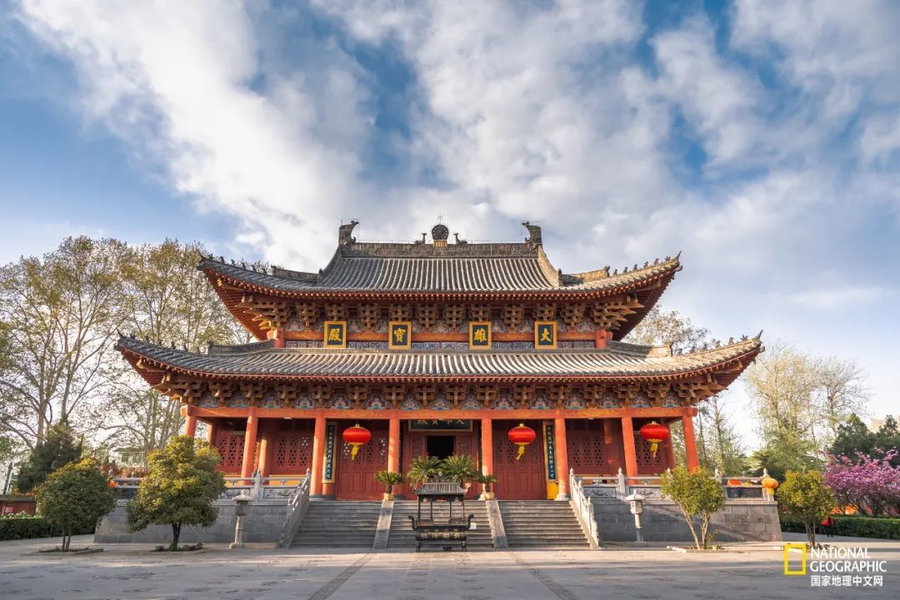
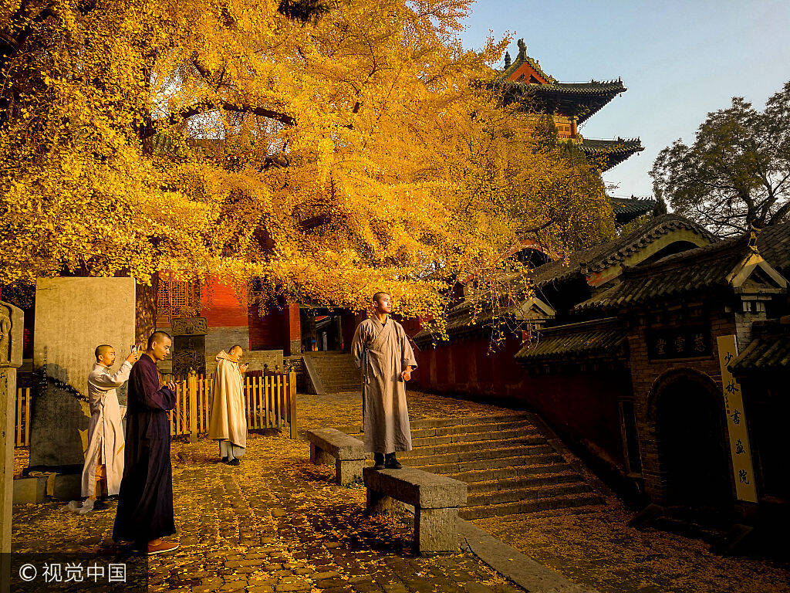
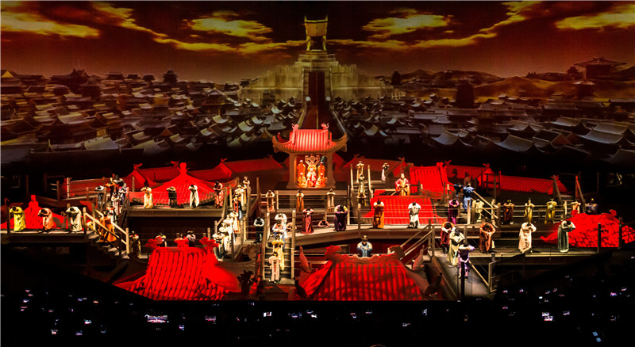
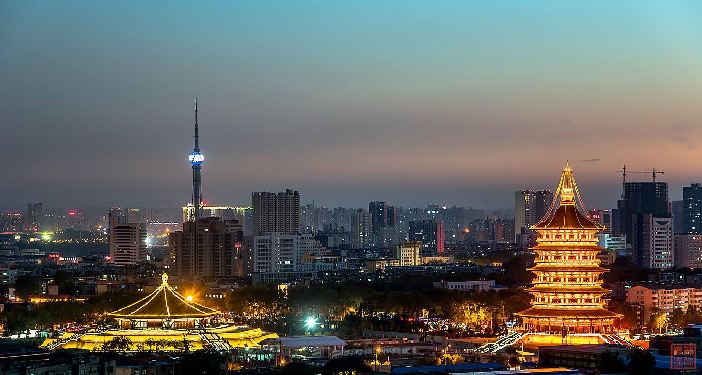
每日行程（轻盈节奏）
| 日期 | 安排 | 交通 | 住宿 |
|---|---|---|---|
| 9/12 周六 | 下午航班 上海直飞郑州新郑机场（约2h）→ 包车高速赴洛阳（约1.5-2h）→ 入住 → 洛邑古城浅逛+汉服夜游（团建第一趴）→ 21:30 前回酒店 | ✈ 直飞 + 🚌 高速专车 | 洛阳酒店 |
| 9/13 周日 | 10:00 龙门石窟（90元，观光车+沿河平缓栈道，慢行不登高）→ 午餐洛阳水席 → 下午 白马寺（35元，平路古刹，轻量）→ 晚上 应天门灯光秀（电梯登楼，无爬山） | 🚌 市内包车 | 洛阳酒店 |
| 9/14 周一 | 10:00 包车赴登封少林寺（约1h）→ 观光车+常住院+塔林+武术表演（80元+观光车25元，全程平地，不登嵩山）→ 素斋午餐 → 午后返郑州（约2h）→ 下午 酒店休整 → 晚上 如意湖"玉米楼"夜景打卡（团建第二趴） | 🚌 包车（高速平顺） | 郑州酒店 |
| 9/15 周二 | 只有河南·戏剧幻城 全天（约10:00入园-21:00散场）：多场小剧场随心刷 + 坐定式《幻城剧场》主剧（75分钟）+ 夯土墙光影秀；午餐园内简餐（统一安排），全天在园不赶路 | 🚌 景区往返大巴 | 郑州酒店 |
| 9/16 周三 | 上午 河南博物院（免费预约，平路，九大镇馆之宝）→ 午餐后送机 → 17:00后新郑机场航班返沪（班次密集） | ✈ 直飞返沪 | — |
住宿与餐饮
- 洛阳：应天门商圈准五星 2晚连住；郑州：CBD商圈准五星 2晚连住；全程 2 家酒店
- 餐饮：洛阳水席、少林素斋、豫菜宴、烩面，每日高标准团餐
团建安排
- D1 洛邑古城汉服夜游（全员换装拍照赛）→ D3 如意湖夜景打卡+夜话会 → D4 戏剧幻城全天观演（散场后大巴统一回酒店，约21:30到），每晚 21:30 前结束
用车与服务
- 头等舱座椅大巴全程随队（洛阳↔郑州段全程高速；幻城位于中牟，距郑州市区约30km，往返约40min）；全陪工作人员+洛阳/郑州双地接导游随行
危险因素与风险提示：
- 龙门石窟沿河栈道为平缓石阶，雨天注意防滑（9月河南少雨，仍备雨具）；全程无高危项目
- 少林寺武术表演场次需提前锁定；素斋需提前预订
- 幻城全天场：建议提前锁定入园时段与《幻城剧场》主剧场次（坐定式，避人流高峰）；散场约21:00，返酒店约21:30，为全程唯一较晚收场日
- 河南博物院周一闭馆，已排周三（9/16上午）；需提前实名预约（全陪统一办理）
- 全程高速/市区，信号良好；9月河南气温 18-28℃，体感舒适
¥8,000-8,500
人均 · 20-25人
含 往返机票约1700-1900 · 门票约520（龙门90+白马寺35+少林寺105+幻城一日票290+河南博物院免费）· 洛阳准五星2晚+郑州准五星2晚 · 全程头等舱大巴+全陪 · 水席/素斋/豫菜宴
②平遥+壶口线 · 晋商古城 + 大院环线 + 壶口瀑布 + 晋祠
平遥古城、双林寺、乔家/王家大院、壶口瀑布、晋祠五大主题点，1 家四合院客栈连住 4 晚（全程 1 家酒店最省心）；仅 9/15 壶口段为全天车程日（已提前标注），其余全程平路、信号全稳、性价比最高，综合推荐第 2。


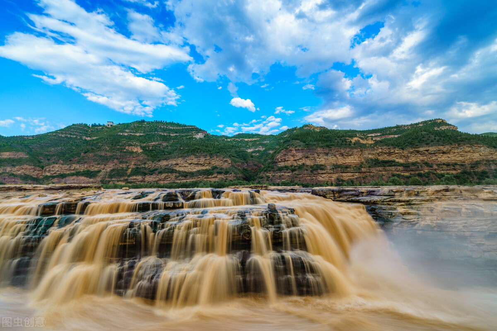
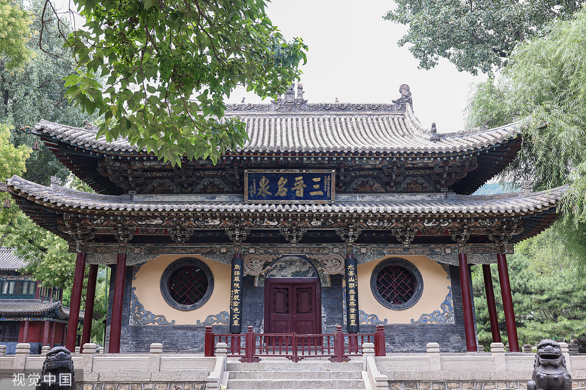
每日行程（轻盈节奏）
| 日期 | 安排 | 交通 | 住宿 |
|---|---|---|---|
| 9/12 周六 | 下午航班 上海直飞太原（约2.5h）→ 高速大巴赴平遥（约1.5-2h，直达古城附近）→ 入住古城四合院客栈 → 古城夜景漫步+平遥牛肉欢迎宴（团建第一趴） | ✈ 直飞 + 🚌 高速大巴 | 平遥古城客栈 |
| 9/13 周日 | 10:00 平遥古城（通票125元：日昇昌票号、县衙、明清街，电瓶车环游不上城墙）→ 下午 双林寺（33元，古城外6km，平路彩塑艺术馆）→ 晚上 《又见平遥》实景剧（238元，周日晚场，全员统一行动） | 🚌 市内包车 | 平遥古城客栈 |
| 9/14 周一 | 10:00 乔家大院（115元，平路院落，晋商大院网红打卡）→ 午餐 晋中风味 → 下午 王家大院（55元，晋商第一院，规模更大，平路）→ 傍晚 返古城 → 晚上 明清街自由夜游 | 🚌 包车（晋中平原，全程平顺） | 平遥古城客栈 |
| 9/15 周二 | 08:00 早出发（全天车程日）包车赴壶口瀑布（约3-3.5h，京昆+青兰高速为主，接近景区约30-40min盘山弯道段）→ 壶口瀑布（90元+景交车40元，观景台护栏游览，彩虹景观）→ 午餐 黄河鲤鱼宴 → 16:00 返程 → 约19:00 回平遥客栈 → 晚上 客栈夜话会（轻量团建，不外出） | 🚌 包车（高速为主） | 平遥古城客栈 |
| 9/16 周三 | 上午 高速大巴赴太原 → 晋祠（80元，千年古建园林，全程平路，约2h）→ 午餐 晋祠泉水豆腐宴 → 送机 → 17:00后航班返沪 | 🚌 高速大巴 + ✈ 直飞返沪 | — |
住宿与餐饮
- 平遥：古城内特色四合院客栈（临主街）4晚连住；全程 1 家酒店，零换酒店
- 餐饮：平遥牛肉宴、晋中面食（刀削面/栲栳栳）、大院农家宴、壶口黄河鲤鱼宴、晋祠泉水豆腐宴
团建安排
- D1 古城夜游+牛肉宴破冰 → D2 《又见平遥》集体观演 → D3 大院摄影赛（晋商掌柜换装拍照）→ D4 壶口归来客栈夜话会（轻量复盘，不外出），每晚 21:30 前结束
用车与服务
- 头等舱座椅大巴全程随队；太原-平遥、平遥-壶口段均为高速/主干道为主（壶口往返约6.5h，中途停靠服务区2次，配备山西本地熟路司机）；全陪工作人员+山西地接导游随行
危险因素与风险提示：
- 壶口瀑布（9/15 全天车程日）：往返约6.5h，大部分高速平顺，仅接近景区有约30-40分钟盘山弯道段（已选头等舱大巴+本地熟路司机）；观景台临崖但全程护栏、湿滑段铺防滑板，风大时注意防风防滑，恐高者可站后方观景位，全程工作人员陪同
- 《又见平遥》周一休演，已排周日晚场，购票需提前锁定
- 太原-平遥大巴段（9/16 赴晋祠）：约1.5-2h，高速平顺，中途停靠1次服务区；晋祠至太原机场约40分钟
- 古城内部分路段为石板路，电瓶车为主、步行区段路平，防滑鞋即可；除壶口段外无信号盲区
- 9月山西早晚温差大（8-24℃），备薄外套；壶口段风大水汽重，加备防风外套
¥7,800-8,300
人均 · 20-25人
含 往返机票约1700-1900 · 门票约780（平遥通票125+又见平遥238+双林寺33+乔家115+王家55+壶口90+景交车40+晋祠80）· 古城客栈4晚 · 全程头等舱大巴+全陪 · 特色宴+高标团餐
③东北线 · 延吉 + 长白山 + 图们
长白山为保留精华：景区环保车+倒站车登顶，天池、长白瀑布、绿渊潭、银环湖、地下森林全览；首日直达二道白河、延吉段集中收尾（民俗园+图们），全程零回头路、无跨省转场，综合推荐第 3。
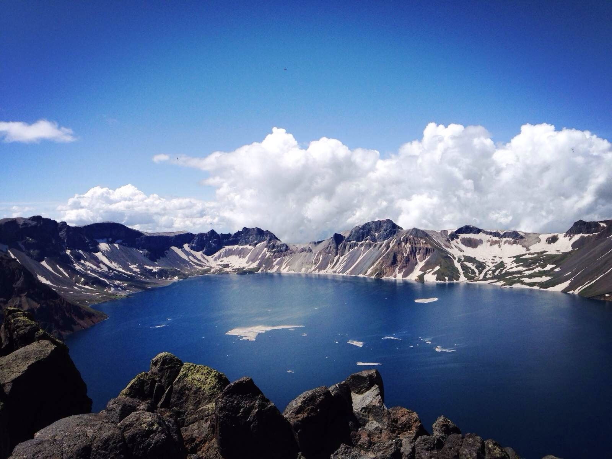
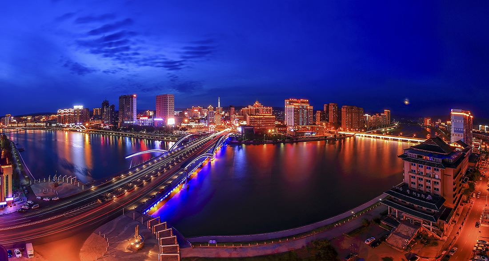
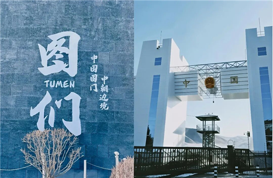
每日行程（轻盈节奏）
| 日期 | 安排 | 交通 | 住宿 |
|---|---|---|---|
| 9/12 周六 | 下午航班 上海直飞延吉（约3h）→ 乘车直达二道白河镇（135KM，约2h，头等舱大巴）→ 入住二道白河酒店 → 品二道白河美食（晚餐·山珍欢迎宴，团建第一趴） | ✈ 直飞 + 🚌 包车 | 二道白河酒店 |
| 9/13 周日 | 10:00 长白山漂流（穿救生衣+教练带队）→ 品二道白河美食（午餐）→ 挖参体验（可带走一颗）+ ATV 自驾体验（头盔护具+教练陪同）→ 品二道白河美食（晚餐）→ 入住二道白河酒店（连住第2晚） | 🚌 包车 | 二道白河酒店 |
| 9/14 周一 | 长白山景区（环保车+倒站车）：天池 → 长白瀑布 → 绿渊潭 → 银环湖 → 地下森林（全程景区车+平路栈道）→ 顺路 恩都里小镇漫步（视时间，可选）→ 傍晚 乘车赴延吉（135KM，约2h）→ 入住延吉酒店 | 🚌 景区环保车 + 包车 | 延吉酒店 |
| 9/15 周二 | 上午 中国朝鲜族民俗园（已预留妆造时间，换装拍照+民俗体验）→ 打卡延大网红墙 → 午餐 延吉美食 → 下午 图们国门景区（延吉→图们约50KM，1h，中朝边境打卡+界碑合影）→ 返回延吉 → 西市场逛吃（朝鲜族小吃+伴手礼）→ 品延吉美食（晚餐）→ 入住延吉酒店（连住第2晚） | 🚌 市内包车 + 图们往返包车 | 延吉酒店 |
| 9/16 周三 | 延吉自由休整（可选 图们江公园晨拍/水上市场早餐）→ 午餐后送机 → 17:00后航班返沪（延吉直飞） | ✈ 直飞返沪 | — |
住宿与餐饮
- 二道白河：长白山脚下酒店 2 晚连住（9/12、9/13）；延吉：市区酒店 2 晚连住（9/14、9/15）；全程 2 家酒店
- 餐饮：延吉朝鲜族美食（冷面/石锅拌饭/烤肉/米酒）、二道白河山珍宴（铁锅炖/冷水鱼/木耳蘑菇）、朝鲜族歌舞宴，每日高标准团餐
团建安排
- D1 二道白河山珍欢迎宴（全员破冰）→ D2 漂流/挖参/ATV 团队协作小任务 → D3 长白山归来赴延吉（车程分享会）+延吉朝鲜族美食局 → D4 民俗园换装合影（分组旅拍任务）+图们国门打卡，每晚 21:30 前结束
用车与服务
- 头等舱座椅大巴全程随队；延吉↔二道白河 长途包车（单程约2h，中途停靠服务区休息）；延吉↔图们 包车（单程约1h）；长白山景区内环保车；延吉市内包车（民俗园/网红墙/西市场）
- 全陪工作人员 1 名 + 延吉/长白山段地接导游分段随行（漂流/挖参/ATV 教练随队指导）
危险因素与风险提示：
- 高海拔与温差：天池海拔约2691米，个别敏感体质可能有轻微不适，山顶0-10℃需备薄羽绒，随车备氧气瓶
- 天池视天气开放：山顶大风/大雾可能临时关闭，如遇关闭则改游长白瀑布+绿渊潭+银环湖（环保车可达，平路），当日行程不受影响
- 长白山漂流：水上项目，全程穿救生衣+专业教练带队，水位上涨/天气不佳时改游美人松公园或魔界，安全第一
- ATV 自驾：佩戴头盔护具、教练陪同限速缓行，不熟悉者可由教练代驾
- 长白山景区环保车山路弯道较多，晕车者提前服用晕车药；9月早晚温差大（5-22℃）
¥7,900-8,400
人均 · 20-25人
含 往返直飞机票约2000-2500（延吉进出）· 门票体验约700（长白山270+民俗园妆造约200+漂流约160+挖参100+ATV约200+图们国门30）· 延吉酒店2晚+二道白河酒店2晚 · 全程头等舱大巴+全陪 · 特色宴+高标团餐
④大同线 · 云冈石窟 + 悬空寺登临 + 应县木塔
1 家酒店连住 4 晚、零转场，每天 1 个核心点+晚间坐定观演，文化浓度最高的最省心线，综合推荐第 4。
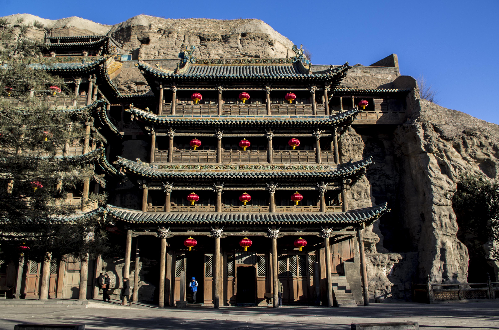
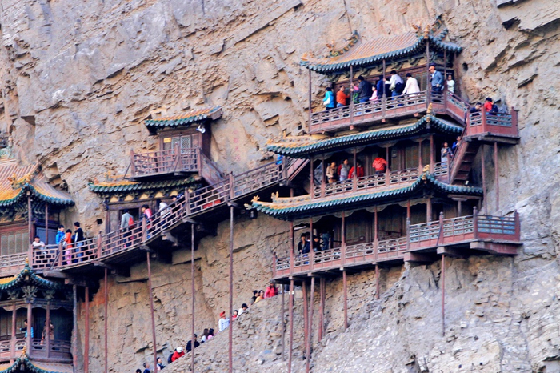

每日行程（轻盈节奏）
| 日期 | 安排 | 交通 | 住宿 |
|---|---|---|---|
| 9/12 周六 | 下午航班 上海直飞大同（晚班18:30前，约3h）→ 抵达入住 → 铜火锅欢迎晚宴（团建第一趴）→ 古城墙夜景（电瓶车环游不上墙） | ✈ 直飞 | 大同酒店 |
| 9/13 周日 | 10:00 云冈石窟（120元，电瓶车+平路游览，重点5/6/20窟，全程平地）→ 午餐刀削面 → 下午 酒店休整 → 晚上 《何以悬空寺》山水光影演出（198元，坐定观演） | 🚌 市内包车 | 大同酒店 |
| 9/14 周一 | 10:00 悬空寺登临（首道15+登临100，悬崖栈道+飞楼，全程护栏、单向通行，含排队约1-1.5h）→ 午餐浑源凉粉 → 下午 应县木塔（世界最高木塔，一层参观+外观，平路）→ 傍晚返大同 → 仿古街夜市（团建第二趴） | 🚌 包车（高速平顺） | 大同酒店 |
| 9/15 周二 | 10:00 华严寺（50元，辽金古刹）+九龙壁（古城内，平路）→ 下午 非遗手作体验：大同剪纸/铜器作坊（室内，成品可带走，团建第三趴）→ 晚上 自由夜游古城 | 🚌 市内包车 | 大同酒店 |
| 9/16 周三 | 上午 古城自由活动（九龙壁补拍/伴手礼）→ 午餐后送机 → 17:00后航班返沪（晚班准点率80%，备选经太原中转） | ✈ 直飞返沪 | — |
住宿与餐饮
- 大同：古城商圈准五星 4晚连住，全程 1 家酒店
- 餐饮：大同铜火锅、刀削面宴、浑源凉粉、烧麦宴，每日高标准团餐
团建安排
- D1 铜火锅晚宴 → D2 光影演出集体观演 → D3 仿古街夜市打卡 → D4 非遗手作（剪纸/铜器，成品可带回），每晚 21:30 前结束
用车与服务
- 头等舱座椅大巴全程随队；全陪工作人员+大同地接导游随行
危险因素与风险提示：
- 悬空寺登临说明：登临为悬崖栈道+木楼，全程护栏、单向通行，旺季排队约1-1.5h；已安排在上午时段避人流高峰，恐高者/腿脚不便者可留寺前广场远观（同车等候，不耽误行程），登临段全陪+地接双陪同、防滑鞋
- 航班频次低：上海直飞大同每日2班（早班06:25/晚班18:30），去程选晚班满足"下午出发"；返程17:00后仅晚班可选（准点率80%），已备太原高铁中转预案
- 9月中旬大同昼夜温差大（5-22℃），备薄羽绒；全程无信号盲区
¥8,000-8,500
人均 · 20-25人
含 往返机票约2000-2300 · 门票约530（云冈120+悬空寺登临115+何以悬空寺198+应县木塔50+华严寺50）· 大同准五星4晚 · 全程头等舱大巴+全陪 · 特色宴+高标团餐 · 非遗手作体验
结结论与建议（按综合推荐排序）
四条线均在预算内（人均7.8k-8.5k），结余可升级五星/餐标/演出座位。以下按综合推荐顺序排列，并逐线列出危险因素，供决策参考。
| 推荐序 | 选线 | 适合理由 | 危险因素 | 一句话点评 |
|---|---|---|---|---|
| 1① 洛阳+郑州 | 四个世界级IP+零爬山+航班最稳 | 低全程平路+坐定观演，无高危项目 | 同时满足轻松+低风险+有意义三条硬要求，综合首选；唯一小代价：幻城散场约21:30回酒店 | |
| 2② 平遥+壶口 | 轻松、低危、信号稳、性价比最高 | 低-中壶口临崖观景台护栏完备；壶口段含约30-40分钟盘山弯道 | 1家客栈连住4晚最省心，每天1-2个点+古城自由，人均8千即高配；仅壶口为全天车程日 | |
| 3③ 东北线 | 看重精华景点与体验项目（漂流/挖参/ATV/图们） | 中-低天池高海拔+山顶大风；漂流/ATV需教练护具；天池视天气开放 | 长白山天池全览+民俗换装+漂流/挖参/ATV体验+图们国门，体验最丰富；首日直达二道白河、图们仅1h车程，全程零回头路 | |
| 4④ 大同 | 文化浓度最高、零转场 | 中悬空寺登临为悬崖栈道（单向限流，恐高者可远观）；每日仅2班直飞、返程准点率80% | 1家酒店连住4晚，悬空寺可登临；唯一短板是航班频次低 |
决策建议：若以"轻松+低风险+信号好"为第一优先级，推荐 ① 洛阳+郑州（综合首选，低危+全程平路）；偏爱古城客栈与晋商文化、追求最高性价比，选 ② 平遥+壶口；看重精华景点与体验项目（漂流/挖参/ATV/图们），选 ③ 东北线；文化浓度优先可考虑 ④ 大同。所有线路人均 1 万即可高配执行，结余可升级住宿与餐标。
下一步：拍板目的地后，立即输出定点详细版——具体航班号与时刻、酒店名与房型、菜单清单、A/B两套报价（保底/高配）供审批；《又见平遥》演出票、长白山景区均需提前30天锁位。